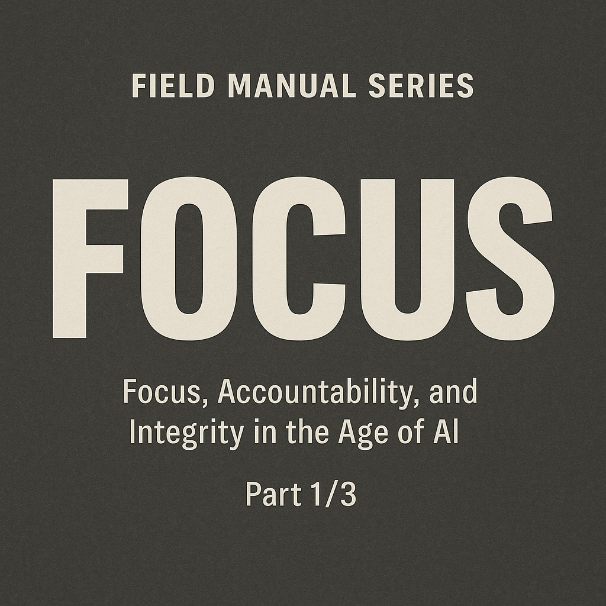

Field Manual ตอนที่ 1: FOCUS เมื่อการไปให้ถึงเป้าหมายต้องอาศัยความชัด ความนิ่ง และความซื่อตรงต่อวิธีที่เลือก
{kind=link}

บทความนี้เปิดชุด Field Manual ด้วยคำว่า FOCUS และหลักการพื้นฐานที่ตรงมากว่า ถ้าอยากไปให้ถึงเป้าหมาย ต้องตั้งเป้าหมายหลักเพียงหนึ่งเดียวให้ชัด และทำให้ทุกสิ่งที่ลงมือเชื่อมกลับมาหาเป้าหมายนั้นได้
ผู้เขียนไม่ได้พูดถึง focus ในความหมายของ productivity แบบผิวเผิน แต่ผูกมันเข้ากับการรักษาทิศทาง ความเหมาะสมของวิธี และ integrity ของผู้ลงมือทำ นั่นทำให้บทความนี้ไม่ใช่แค่คู่มือจัดการเวลา แต่เป็นกรอบคิดเรื่องการไปให้ถึงเป้าหมายโดยไม่หลงเสียตัวตนระหว่างทาง
หัวใจของโพสต์นี้คือการตั้ง “stronghold” หรือฐานที่มั่นของตัวเองให้ชัดก่อนว่าเรากำลังทำอะไร ภายในเมื่อไร และด้วยวิธีใด เพราะ objective ที่ชัดเพียงหนึ่งเดียวจะสร้างพลัง แต่ถ้ามีหลาย objective พร้อมกัน ความขัดแย้งจะเริ่มเกิดตั้งแต่ข้างในตัวเราเอง
Progress ไม่ใช่เรื่องความเร็ว แต่คือการรักษาทิศทางไว้ได้แม้ในวันที่เหนื่อย
หนึ่งในประโยคที่คมที่สุดของบทความนี้คือ “Progress is not speed — it’s direction maintained under fatigue.” ผู้เขียนจึงชี้ว่า สิ่งสำคัญไม่ใช่การขยับให้เร็วที่สุด แต่คือการตอบให้ได้ว่างานที่กำลังทำอยู่เชื่อมกับเป้าหมายตรงไหน ถ้าตอบไม่ได้ก็ต้องหยุดหรือปรับทันที
มุมนี้ทำให้ focus ถูกตีความใหม่ว่าไม่ใช่การเร่งตัวเองอย่างไม่มีที่สิ้นสุด แต่คือการรักษาเส้นทางให้มั่นคงในเกมระยะยาวที่ต้องรู้จังหวะเร่งและผ่อนอย่างพอดี
Single Focus Zone คือการเลือกสงครามที่คุ้มจะสู้ แล้วละทิ้งสิ่งรบกวนที่ไม่จำเป็น
บทความนี้ย้ำให้ทำสิ่งเดียวในช่วงเวลาเดียว ตัดสิ่งรบกวนและงานนอกเป้าหมายออก พร้อมตั้งคำถามกับตัวเองเสมอว่า ตอนนี้กำลังสู้เพื่อเป้าหมายจริงหรือแค่เดินตามความอยากรู้ชั่วคราว นี่คือวินัยที่ยากมาก แต่จำเป็นสำหรับงานที่ต้องการผลลัพธ์จริง
ประโยค “Focus is choosing one war worth fighting — and ignoring the rest.” จึงเป็นทั้งหลักคิดและคำเตือน ว่าความสามารถในการละทิ้งเรื่องที่ไม่จำเป็นมีความสำคัญพอ ๆ กับความสามารถในการลงมือทำ
ชัยชนะที่ทำให้เราสูญเสียความซื่อตรง ไม่ใช่ชัยชนะจริง
ส่วนที่ทำให้ Field Manual ตอนนี้ต่างจากคู่มือโฟกัสทั่วไป คือการเน้นว่าเราต้องชนะโดยไม่สูญเสียตัวเอง ผู้เขียนย้ำว่าควรใช้วิธีที่ไม่ผิด ไม่เบียดเบียน และไม่บิดเบือนความจริง พร้อมยอมช้ากว่าถ้าจำเป็น เพื่อรักษาหลักการไว้
มุมนี้ทำให้ focus ไม่กลายเป็นเครื่องมือของความทะเยอทะยานแบบไม่จำกัด แต่เป็นการเดินหน้าแบบมี integrity ซึ่งให้ความหมายกับผลลัพธ์สุดท้าย
การไปให้สุดคือการเป็นเจ้าของการเดินทาง ไม่ใช่แค่ผลลัพธ์ปลายทาง
ข้อสรุปของโพสต์นี้อยู่ที่คำว่า Finish by Your Own Hand ผู้เขียนชี้ว่าการเริ่มต้นแล้วไปให้สุดคือการเป็นเจ้าของการเดินทางของตัวเอง เหนื่อยได้ ท้อได้ แต่ไม่ควรปล่อยให้สิ่งเหล่านั้นกลืนเป้าหมายไปเสียก่อน
ดังนั้น ตอนที่ 1 ของ Field Manual จึงไม่ได้สอนแค่การตั้งเป้าหมาย แต่สอนการถือเส้นให้ได้จนจบ ด้วยความชัด พลัง และความหมาย ซึ่งถูกสรุปไว้ชัดในประโยคปิดว่า Clarity gives direction. Focus gives power. Integrity gives meaning.